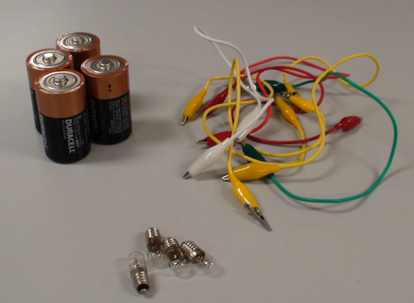

Although the responsive teaching and learning presented here occurred prior to the publication of the NGSS (drafts or final), students were nonetheless engaged in efforts that were later called for by performance expectations.
The performance expectation highlighted in this case study comes from the January 2013 draft of the fourth grade NGSS section on energy, specifically 4-PS3-b. This case study also highlights additional scientific practices.
Our teacher, Kim, taught in a suburban public school. She had a split 4th/5th grade classroom. While her 5th graders had science elsewhere, Kim's 4th graders explored electric circuits.
To begin their exploration they designed and tested simple electric circuits in an effort to light a bulb. Toward this effort students worked to determine the conditions for which a bulb lights. At the same time students naturally tried to understand how a circuit works.
Kim carefully framed the initial activity as a design-and-test effort, reinforcing this with the layout of a worksheet and with frequent reminders to the students. Video 1 shows Kim introducing the task.
Video 1: Kim introduces the task.
Examining the video. How does this exploration have the potential to address the following performance expectation?
4-PS3-b: Make observations and collect data to provide evidence that energy can be transferred from place to place by … electric currents.
As students started their task, batteries, bulbs and wires were on their tables. Here are the materials students had at their disposal. If you have never played with bulbs and batteries, now would be a good time to grab some materials and do your own exploring!

Students carefully drew designs on paper before using the equipment. When individuals and pairs began to test their circuits, Kim walked around the room asking students about their designs. Did this design work? Or that one? Did you connect your circuit exactly as you drew it? What could be changed in your design to make it work? Her questions reinforced the careful design-and-test process that she wanted students to engage in.
While students were testing their designs, they began to notice patterns in the circuits. Video 2 shows the class discussing their circuits and observations.
Video 2: Students share circuit designs.
Examining the video. Review the scientific practices called for in fourth grade NGSS section on energy. What practices are the students engaged in? How is Kim responsive to students while still keeping the discussion focused on designing a circuit to light the bulb?
Delving deeper. After thinking about the questions above (or better yet, discussing them too!), delve deeper into Video 2.
As students noticed patterns, they naturally began to think about why the patterns existed. Without hesitation, students began to describe something going from the battery to the bulb, sometimes using several words interchangeably such as energy, juice, power and electricity Kim encouraged students to think about what was happening in the circuits. In Video 3 Ashton shared his model to describe how energy from the battery lights the bulb:
Video 3: Ashton's model.
Examining the video. Review the scientific practice, core idea and crosscutting concept encompassed by 4-PS3-b. How was Ashton working toward this performance expectation? What additional practices was he engaged in?
Examining the video further. How does Ashton's explanation align with the scientifically accepted explanation for how the circuit works? How could Kim be responsive to Ashton while helping him move toward an understanding of the circuit that includes a flow of energy in a loop around the circuit rather than clashing in the bulb?
Delving deeper. After pondering these questions, delve deeper into what Ashton had to say.